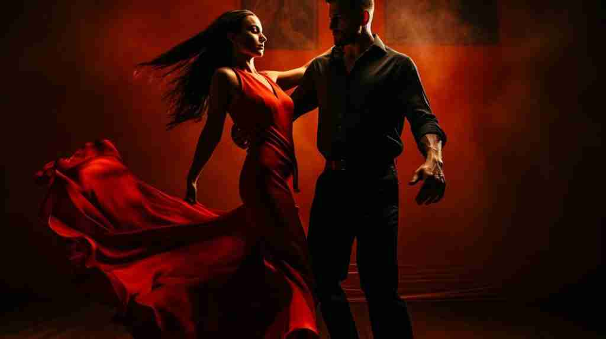

El Arte de la Danza
La danza es un arte que utiliza el movimiento del cuerpo, usualmente con música, como una forma de expresión y de interacción social con fines de entretenimiento y artísticos. Es una de las manifestaciones artísticas más antiguas de la humanidad, con evidencia de su existencia en pinturas rupestres de hace más de 10,000 años. A lo largo de la historia, la danza ha cumplido diversas funciones, desde rituales religiosos y celebraciones comunitarias hasta una forma de arte escénico y una disciplina deportiva.
Este arte ancestral permite comunicar emociones, conceptos e historias de manera simbólica y sutil a través de secuencias de movimiento que combinan gestos, desplazamientos y posturas específicas. La danza es un lenguaje universal que trasciende las barreras culturales y lingüísticas, permitiendo a las personas conectar a un nivel más profundo. Cada cultura tiene sus propias danzas tradicionales que reflejan su historia, valores y cosmovisión.
Además de su valor cultural, la danza es una actividad física completa que involucra prácticamente todos los músculos del cuerpo. Bailar regularmente puede mejorar la coordinación, el equilibrio, la flexibilidad y la resistencia muscular. Por esta razón, cada vez más personas la practican como una forma de ejercicio para mantenerse en forma y saludables.
La Danza como Actividad Cultural
La danza como actividad cultural es un reflejo de la sociedad y sus tradiciones. Se transmite de generación en generación y forma parte de la identidad de una comunidad. Las danzas folclóricas, por ejemplo, narran historias de la vida cotidiana, de héroes legendarios o de eventos significativos para un pueblo. A través de sus movimientos, vestuarios y música, estas danzas preservan y celebran el patrimonio cultural.
En muchas culturas, la danza está intrínsecamente ligada a eventos sociales y ceremonias. Desde bodas y festivales hasta rituales religiosos, la danza marca momentos importantes en la vida de las personas y fortalece los lazos comunitarios. Es una forma de expresión colectiva que une a las personas en una experiencia compartida.
Ballet Clásico

El ballet clásico es una forma de danza que se originó en las cortes del Renacimiento italiano del siglo XV. Se caracteriza por su técnica rigurosa, que incluye movimientos precisos, gráciles y fluidos. El ballet se basa en posiciones y movimientos específicos que se han desarrollado a lo largo de los siglos. Es una disciplina que requiere años de entrenamiento para dominarla y es la base de muchas otras formas de danza.
El ballet no solo es una forma de arte, sino también un deporte exigente que requiere una gran fuerza, flexibilidad y resistencia. Los bailarines de ballet son atletas de élite que dedican sus vidas a perfeccionar su arte. Las presentaciones de ballet suelen contar una historia a través de la danza, la música y la escenografía, transportando al público a mundos de fantasía y emoción.
Salsa

La salsa es un baile popular que se originó en Cuba en la década de 1920. Es una fusión de ritmos afrocubanos y caribeños con influencias del jazz. La salsa es un baile en pareja que se caracteriza por sus movimientos enérgicos, sensuales y rítmicos. Es un baile social que se disfruta en fiestas, clubes y festivales de todo el mundo.
Aprender a bailar salsa no solo es divertido, sino que también ofrece numerosos beneficios para la salud. Es un excelente ejercicio cardiovascular que ayuda a quemar calorías y a mejorar la coordinación. Además, al ser un baile social, la salsa fomenta la interacción con otras personas y ayuda a reducir el estrés.
La Danza como Actividad Deportiva
El reconocimiento de la danza como deporte ha ido en aumento, y desde 1997, el Comité Olímpico Internacional la reconoce como tal. El baile deportivo, también conocido como "Tanzsport", es una disciplina competitiva con reglas y normativas específicas. Los bailarines compiten en diferentes estilos, como los bailes latinos (samba, cha-cha-chá, rumba, pasodoble y jive) y los bailes estándar (vals, tango, vals vienés, slow foxtrot y quickstep).
El entrenamiento de un bailarín deportivo es tan riguroso como el de cualquier otro atleta de alto rendimiento. Requiere una combinación de preparación física, técnica y artística. Los bailarines deben tener una excelente condición física, flexibilidad, fuerza y coordinación, además de la capacidad de expresar emociones a través de sus movimientos y conectar con la música y su pareja.
- Beneficios físicos de la danza:
- Mejora la salud cardiovascular.
- Aumenta la fuerza y la resistencia muscular.
- Mejora el equilibrio y la coordinación.
- Fortalece los huesos.
- Ayuda a controlar el peso.